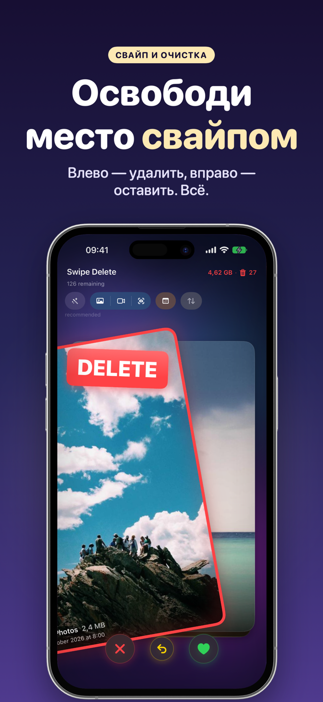
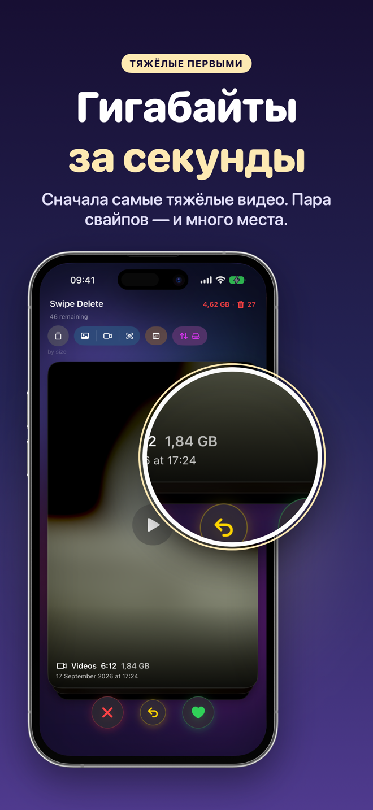
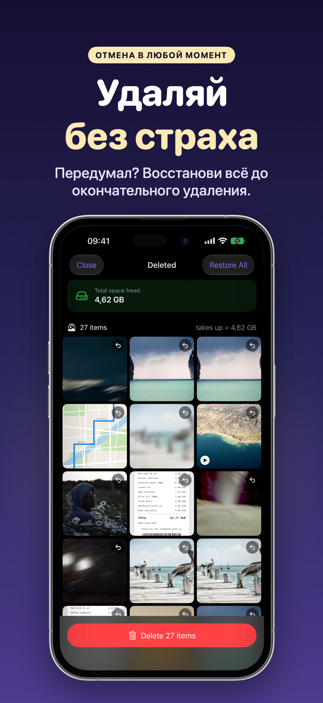
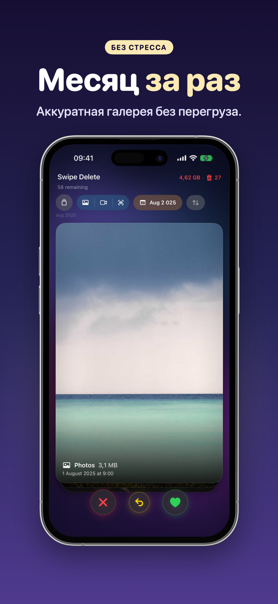
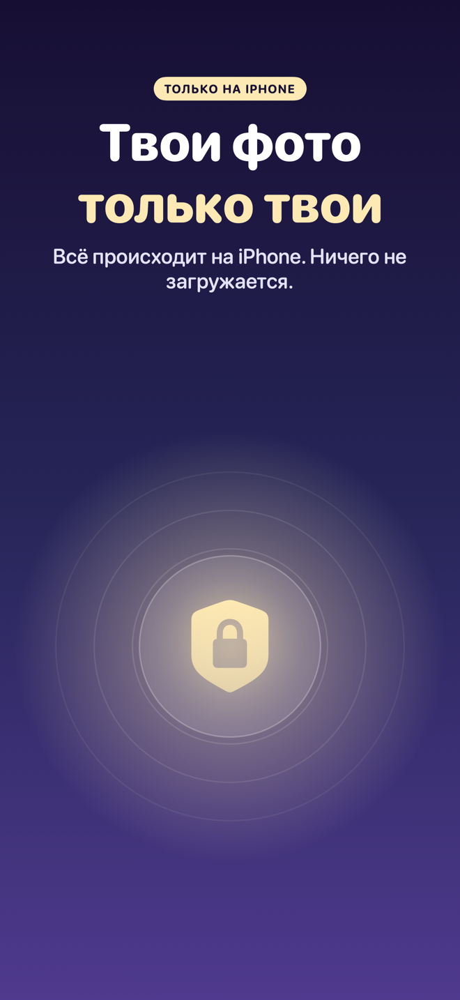
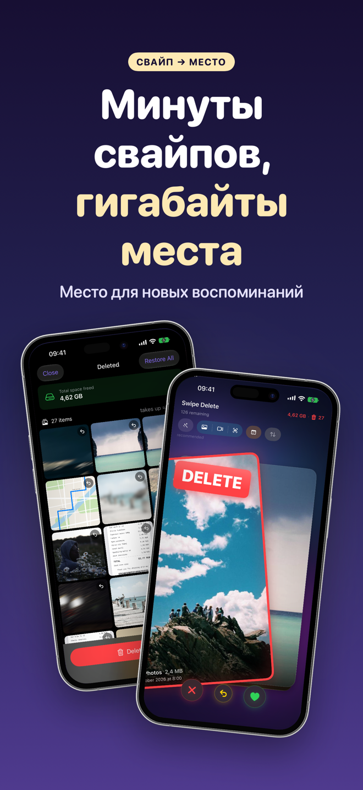
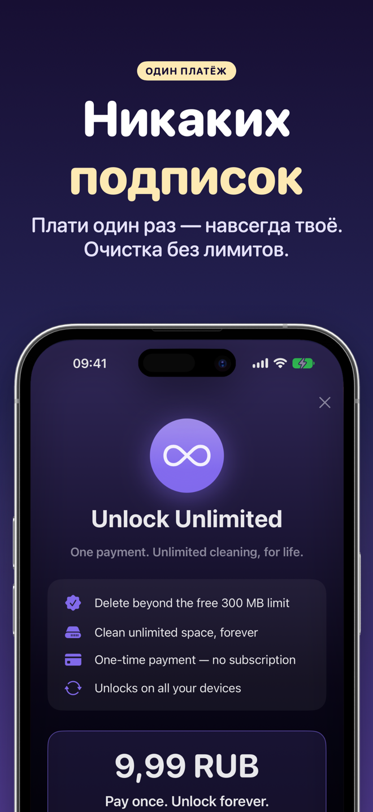

SwipeDelete · Удаление фото
Удаление фото свайпом: освободите память iPhone за минуты
Листайте фото и видео, как игральные карты: влево — удалить, вправо — оставить. Больше никаких бесконечных альбомов и ручного выбора.
Скоро вApp StoreВсё на устройстве · Корзина для подстраховки · Разовая покупка без подписки

Чистка, которая похожа на игру
Одно движение пальца — одно решение, а лёгкая вибрация подтверждает его. Вы начинаете с лишнего и быстрее получаете результат.
Скоро вApp Store- Умные подсказкиСкриншоты, похожие снимки, серии кадров и неудачные фото — первыми.
- Сначала самые тяжёлыеСортировка по размеру: больше места при минимуме свайпов.
- Удаляйте без страхаВнутренняя корзина, отмена и подтверждение iOS.
- Приватность по умолчаниюФото не загружаются в облако.
Порядок в галерее — как в игре
Счётчик показывает, сколько гигабайт вы освободили за всё время. Пролистайте, чтобы увидеть все экраны →
Влево — удалить, вправо — оставить 
Сначала самые тяжёлые видео 
Восстановление в любой момент 
По одному месяцу 
Всё на устройстве 
Минуты свайпов — гигабайты места 
Разовая покупка
Как это работает
Четыре шага — и готово.
Разрешите доступ к Фото
Откройте SwipeDelete и разрешите доступ к медиатеке. Анализ остаётся на вашем iPhone.
Выберите, с чего начать
Умные подсказки, фильтры «фото», «видео», «скриншоты», год и месяц или сортировка по размеру.
Свайпайте
Влево — удалить, вправо — оставить. Передумали? Отмените одним касанием.
Проверьте и подтвердите
Просмотрите корзину, восстановите нужное и подтвердите удаление.
Гайды: как освободить место
Практические инструкции, пока на английском языке.
Как освободить место на iPhone
На английском.
Читать (EN) →Удалить дубликаты фото
На английском.
Читать (EN) →Удалить скриншоты
На английском.
Читать (EN) →Удалить размытые фото
На английском.
Читать (EN) →Найти тяжёлые видео
На английском.
Читать (EN) →Очистить галерею
На английском.
Читать (EN) →Удалить много фото сразу
На английском.
Читать (EN) →Удалить серии кадров
На английском.
Читать (EN) →Частые вопросы
Как быстро удалить много фото на iPhone?
В SwipeDelete вы листаете фото и видео как карты: свайп влево — удалить, вправо — оставить. Решение за секунду, а последнее действие можно отменить в любой момент. Подробнее (EN)
Можно ли вернуть случайно удалённое фото?
Да. Всё, что вы смахнули влево, сначала попадает во внутреннюю корзину: восстанавливайте отдельные снимки или очищайте всё одним касанием. Перед окончательным удалением iOS попросит подтверждение. Подробнее (EN)
Как удалить скриншоты и похожие фото?
Умные подсказки ставят в начало колоды скриншоты, похожие снимки и дубликаты, неотобранные серии кадров и фото низкого качества. Подробнее (EN)
Как освободить больше места за меньшее время?
Включите сортировку по размеру: самые тяжёлые файлы идут первыми, и места становится больше при минимуме свайпов. Подробнее (EN)
Загружаются ли мои фото в облако?
Нет. Весь анализ происходит на вашем устройстве; фото никуда не отправляются. Политика конфиденциальности (EN)
Это подписка?
Нет. Бесплатно можно освободить до 300 МБ, а единоразовая покупка открывает безлимитное использование на ваших устройствах Apple. Условия использования (EN)
Проведите пальцем — и у iPhone появится место
SwipeDelete скоро появится в App Store.
Скоро вApp Store